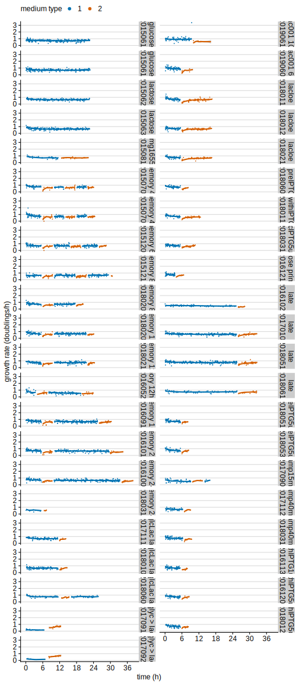
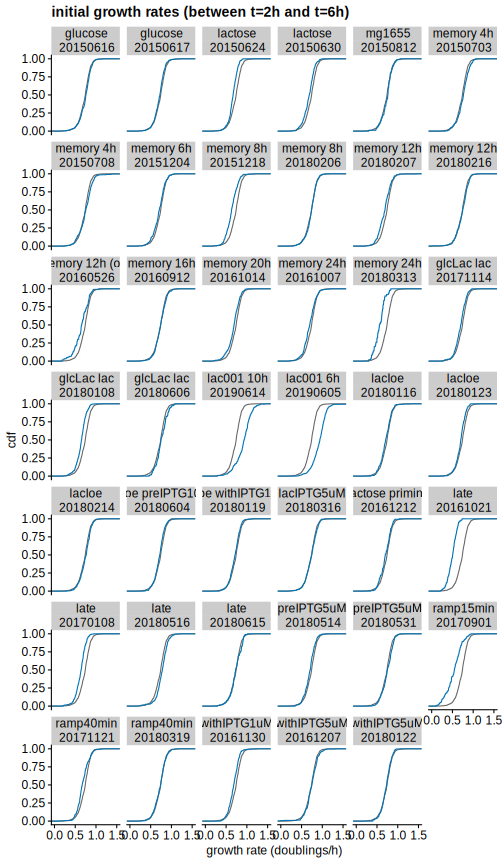
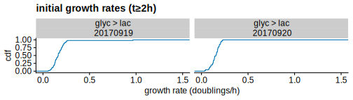
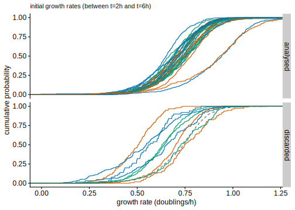
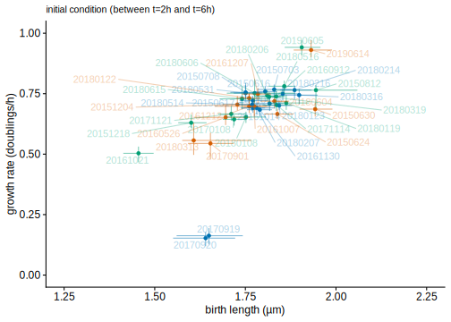
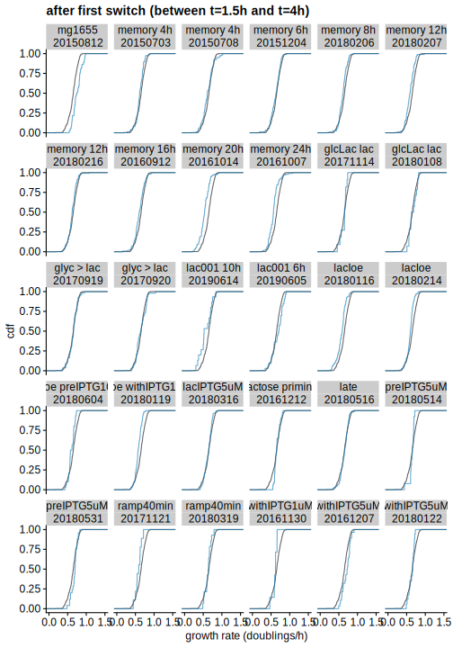
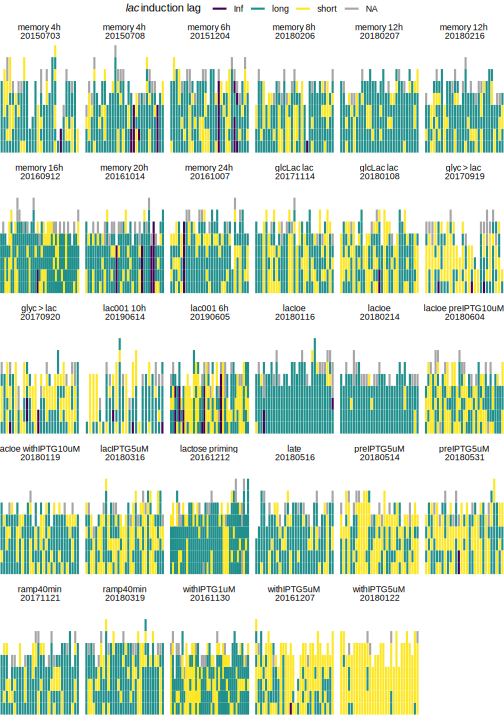
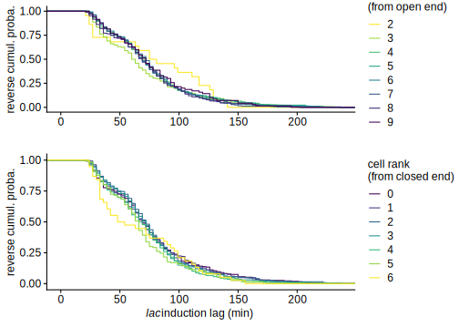

Controls
Thomas Julou
09 October, 2020
Growth between switches
First we perform quality control for all mother machine experiments by checking how cells are growing between switches. For each cell cycle, growth rate and \(r^2\) are computed from a fit of exponential elongation; we compare their distributions between experiments.
# extract cell cycle params for those not overlapping with a switch
mycells_btw <- myframes %>%
ungroup %>%
# filter(!(condition %in% c('glucose', 'lactose', 'mg1655'))) %>%
filter(!discard_top) %>%
filter(start_time>0, start_time>=m_start, end_type=='div') %>%
# select(condition, date, pos, gl, id, genealogy, start_time, end_time, end_type,
# time_sec, medium, m_start, m_end, gfp_nb, length_um, m_cycle, cell_num_in_lane, total_cell_in_lane) %>%
# group_by(date, pos, gl, id) %>%
partition(condition, date, pos, gl, id, cluster=mycluster) %>%
# filter(start_time>m_start, end_type=='div', # full cell cycles only
# length(unique(interaction(medium, m_cycle)))==1) %>% # not overlaping a switch
filter((unique(medium)!='glycerol' & n()>9) | # at least 10 time points (≈1/3 of cell cycle)
(unique(medium)=='glycerol' & n()>19)) %>% # requires 20 time points in glycerol
do((function(.df) {
# browser()
# .mod_ll_t <- fastLmPure( cbind(1, .df$time_sec), log(.df$length_um) )
.mod_ll_t <- lm( log(length_um)~time_sec, .df) # use fastLm() for predict
.time_birth <- first(.df$time_sec)
.time_div <- last(.df$time_sec)
.logl <- predict(.mod_ll_t, se.fit=TRUE)
data.frame(npoints=.mod_ll_t$df.residual+1,
time_birth=.time_birth, time_div=.time_div,
cell_num_from_top=mean(.df$cell_num_in_lane),
cell_num_from_bottom=mean(.df$total_cell_in_lane-.df$cell_num_in_lane),
# logl_time_slope=.mod_ll_t$coefficients[2], logl_time_slopesd=.mod_ll_t$stderr[2],
loglength_start=first(.logl$fit), loglength_startse=first(.logl$se.fit),
loglength_end=last(.logl$fit), loglength_endse=last(.logl$se.fit),
logl_time_slope=.mod_ll_t$coefficients[2], logl_time_slopesd=summary(.mod_ll_t)$coefficients[2,2],
logl_time_r2=cor(.df$time_sec, log(.df$length_um))^2 )
})(.) ) %>%
collect() %>%
arrange(condition, date, pos, gl, id) %>%
left_join(myframes %>% group_by(date, pos, gl, id) %>% slice(1) %>%
select(date, pos, gl, id, medium, m_start, m_cycle, mstep, gl_id, cell, ugen, parent_id) )This overview of growth rates over all experiments (only 1/10th of data shown, lines are loess fits computed on the full dataset) is useful to visualise changes of growth rate between conditions, as well as the transient when cells are exposed to a new condition. In particular, one can see that:
- at the start of all experiment, the growth rate decreases during the first two hours (due to fluorescence illumination, discarded in further analysis)
- after each switch, growth rates returns to its steady state value (specific to the new condition) after ca. 2h.
mycells_btw %>%
filter(!is.na(medium)) %>%
group_by(condition) %>%
mutate(m_col=as.numeric(fct_inorder(factor(medium))) ) %>% # %>% interaction(m_cycle)
(function(.df)
ggplot(.df, aes(time_birth, logl_time_slope/log(2) * 3600, col=factor(m_col))) +
facet_wrap(~condition+date, ncol=2, dir="v", strip.position="right",
labeller=as_labeller(rename_conds)) +
geom_point(alpha=1, size=.2, data=sample_frac(.df, size=.1)) +
geom_smooth(aes(group=interaction(m_col, m_cycle)), method='loess', show.legend=FALSE) +
scale_x_hours() +
labs(x="raw time (h)", y="growth rate (doublings/h)", col="medium type") +
guides(col = guide_legend(override.aes=list(alpha = 1, size=2))) +
# ylim(0, NA) +
theme(legend.position='top') +
background_grid(major="y", minor = "none") +
NULL
)
Growth in M9 glucose before the first switch
Next, we focus on growth rate distributions in initial conditions (M9 + 0.2% glucose or M9 + 0.4% glycerol) since we want to compare cells switching from similar physiological states on different days (and hence discard outlier experiments if any).
For each experiment, the distribution of initial growth rate is stratified by time. As noted previously, this demonstrates that steady state is reached in less than 2 hours. Note that grey lines show constant glucose as a reference.
mycells_btw %>%
group_by(condition) %>%
mutate(m_col=as.numeric(fct_inorder(factor(medium))) %>% interaction(m_cycle)) %>%
filter(m_col=='1.1') %>%
ungroup %>%
filter(!is.na(medium)) %>%
mutate(time_bin=Hmisc::cut2(time_birth/3600, cuts=(0:15)*2)) %>%
(function(.df) {
ggplot(.df, aes(logl_time_slope/log(2) * 3600)) +
facet_wrap(~condition+date, labeller=as_labeller(rename_conds)) +
stat_ecdf(aes(col=time_bin), alpha=.6) +
stat_ecdf(lty='dotted', data=.df %>% filter(condition=='glucose') %>% select(-condition, -date)) +
# ggplot2::scale_color_discrete() +
scale_colour_viridis_d() +
coord_cartesian(xlim=c(0, 1.5)) +
labs(x='growth rate (doublings/h)', y='cdf', col='birth time (h)') +
theme(legend.position='bottom') +
NULL
})
In order to identify days where initial growth is slower than expected, distributions of growth rates are compared between 2h and 6h. Note that dotted lines show constant glucose (as a reference).
mycells_btw %>%
filter(!is.na(medium)) %>%
# left_join(condition_ts %>% select(condition, medium, m_id) %>% distinct()) %>%
# mutate(m_col=interaction(m_id, m_cycle)) %>%
group_by(condition) %>%
mutate(m_col=as.numeric(fct_inorder(factor(medium))) %>% interaction(m_cycle)) %>%
filter(m_col=='1.1') %>%
ungroup %>%
filter(between(time_birth/3600, 2, 6),
medium!='glycerol') %>%
(function(.df) {
ggplot(.df, aes(logl_time_slope/log(2) * 3600)) +
facet_wrap(~condition+date, labeller=as_labeller(rename_conds), ncol=6) +
stat_ecdf(col='grey40', data=.df %>% filter(condition=='glucose') %>% select(-condition, -date)) +
stat_ecdf(col=qual_cols[1]) +
# stat_ecdf(aes(group=gl_id), col=qual_cols[1], size=.2) +
coord_cartesian(xlim=c(0, 1.5)) +
labs(x='growth rate (doublings/h)', y='cdf', title='initial growth rates (between t=2h and t=6h)') +
# theme(strip.text=element_text(size=6)) +
NULL
})
mycells_btw %>%
ungroup %>%
filter(!is.na(medium)) %>%
# left_join(condition_ts %>% select(condition, medium, m_id) %>% distinct()) %>%
# mutate(m_col=interaction(m_id, m_cycle)) %>%
group_by(condition) %>%
mutate(m_col=as.numeric(fct_inorder(factor(medium))) %>% interaction(m_cycle)) %>%
filter(m_col=='1.1') %>%
filter(medium=='glycerol') %>%
filter(time_birth> 2*3600) %>%
# pull(condition) %>% table
(function(.df) {
ggplot(.df, aes(logl_time_slope/log(2) * 3600)) +
facet_wrap(~condition+date, labeller=as_labeller(rename_conds), ncol=6) +
stat_ecdf(col='grey40', data=.df %>% filter(condition=='glucose') %>% select(-condition, -date)) +
stat_ecdf(col=qual_cols[1]) +
# stat_ecdf(aes(group=gl_id), col=qual_cols[1], size=.2) +
coord_cartesian(xlim=c(0, 1.5)) +
labs(x='growth rate (doublings/h)', y='cdf', title='initial growth rates (t≥2h)') +
# theme(strip.text=element_text(size=6)) +
NULL
})
mycells_btw %>%
filter(!is.na(medium)) %>%
# left_join(condition_ts %>% select(condition, medium, m_id) %>% distinct()) %>%
# mutate(m_col=interaction(m_id, m_cycle)) %>%
group_by(condition) %>%
mutate(m_col=as.numeric(fct_inorder(factor(medium))) %>% interaction(m_cycle)) %>%
filter(m_col=='1.1') %>%
ungroup %>%
filter(! condition %in% c('mg1655', 'lactose'),
between(time_birth/3600, 2, 6),
medium!='glycerol') %>%
mutate(type=ifelse(date %in% discarded_dates, 'discarded', 'analysed')) %>%
(function(.df) {
ggplot(.df, aes(logl_time_slope/log(2) * 3600)) +
facet_grid(type~.) +
# facet_wrap(~condition+date, labeller=as_labeller(rename_conds), ncol=6) +
stat_ecdf(aes(col=factor(date))) +
stat_ecdf(col='grey40', lty='dashed',
data=.df %>% filter(condition=='glucose') %>% select(-type, -condition, -date)) +
scale_colour_periodic(.n = 3, guide='none') +
coord_cartesian(xlim=c(0, 1.2)) +
labs(x='growth rate (doublings/h)', y='cumulative probability') +
# theme(strip.text=element_text(size=6)) +
NULL
}) +
labs(subtitle='initial growth rates (between t=2h and t=6h)')
(myplots[['gr_length_medians']] <- function(.article_ds=FALSE)
mycells_btw %>% ungroup() %>%
filter(!is.na(medium)) %>%
filter_article_ds(.article_ds) %>%
group_by(condition) %>%
mutate(m_col=as.numeric(fct_inorder(factor(medium))) %>% interaction(m_cycle)) %>%
filter(m_col=='1.1') %>%
ungroup %>%
filter(! condition %in% c('mg1655', 'lactose'),
(time_birth>2*3600 & time_birth<6*3600)) %>%
left_join(condition_acq_times %>% group_by(condition, medium, m_cycle) %>% slice(1) %>%
filter(m_start==0) %>% select(condition, nutrient=medium) ) %>%
mutate(condition=fct_relabel(factor(condition), rename_conds),
type=ifelse(date %in% discarded_dates, 'discarded', 'analysed')) %>%
# nutrient='glucose',
# nutrient=ifelse(medium=='glycerol', 'glycerol', nutrient),
# nutrient=ifelse(condition=='lactose', 'lactose', nutrient)) %>%
(function(.df) {
.dfs <- .df %>% group_by(condition, nutrient, type, date) %>%
do(median_hilow(.$loglength_start, conf.int=0.5) %>%
# do(median_pi(.$loglength_start) %>%
setNames(c('lls_med', 'lls_min', 'lls_max')) ) %>%
left_join(
.df %>% group_by(date) %>%
do(median_hilow(.$logl_time_slope, conf.int=0.5) %>%
# do(median_pi(.$logl_time_slope) %>%
setNames(c('lltsl_med', 'lltsl_min', 'lltsl_max')) )
)
ggplot(.dfs) +
geom_point(aes(exp(lls_med), lltsl_med/log(2) * 3600, col=nutrient, alpha=type, shape=type)) +
geom_errorbar(aes(exp(lls_med), ymin=lltsl_min/log(2) * 3600, ymax=lltsl_max/log(2) * 3600, col=nutrient, alpha=type)) +
geom_errorbarh(aes(exp(lls_med), lltsl_med/log(2) * 3600, xmin=exp(lls_min), xmax=exp(lls_max), col=nutrient, alpha=type))+
scale_alpha_manual(values=c(1, 0.2)) +
# coord_cartesian(xlim=c(1.4, 2.), ylim=c(0, 0.85)) +
expand_limits(y=0) +
labs(x='birth length (µm)', y='growth rate (doublings/h)') +
NULL
})
)() +
labs(subtitle='initial condition (between t=2h and t=6h)')The systematic relationship between growth rate and cell size at birth indicates that cells growing slower are in a different physiological state. Note that lower illumination during experiments with low lactose concentration induces less damage and hence leads to higher growth rate before the switch.
mycells_btw %>%
filter(!is.na(medium)) %>%
group_by(condition) %>%
mutate(m_col=as.numeric(fct_inorder(factor(medium))) %>% interaction(m_cycle)) %>%
filter(m_col=='1.1') %>%
ungroup %>%
filter((time_birth>2*3600 & time_birth<6*3600)) %>%
mutate(condition=fct_relabel(condition, rename_conds)) %>%
(function(.df) {
.dfs <- .df %>% group_by(condition, date) %>%
do(median_pi(.$loglength_start) %>% setNames(c('lls_med', 'lls_pi_min', 'lls_pi_max')) ) %>%
left_join(
.df %>% group_by(date) %>%
do(median_pi(.$logl_time_slope) %>% setNames(c('lltsl_med', 'lltsl_pi_min', 'lltsl_pi_max')) )
)
ggplot(.df) +
geom_point(aes(exp(lls_med), lltsl_med/log(2) * 3600, col=condition), data=.dfs ) +
geom_errorbar(aes(exp(lls_med), ymin=lltsl_pi_min/log(2) * 3600, ymax=lltsl_pi_max/log(2) * 3600, col=condition),
alpha=.5, data=.dfs ) +
geom_errorbarh(aes(exp(lls_med), lltsl_med/log(2) * 3600, xmin=exp(lls_pi_min), xmax=exp(lls_pi_max), col=condition),
alpha=.5, data=.dfs ) +
ggrepel::geom_text_repel(aes(exp(lls_med), lltsl_med/log(2) * 3600, col=condition, label=date), alpha=0.3, data=.dfs) +
# force=4, point.padding=1) +
scale_colour_periodic(.n = 3, guide='none') +
coord_cartesian(xlim=c(1.25, 2.25), ylim=c(0, 1)) +
labs(x='birth length (µm)', y='growth rate (doublings/h)') +
# ggplot2::scale_color_discrete(guide='none') +
theme(legend.position='bottom') +
NULL
}) +
labs(subtitle='initial condition (between t=2h and t=6h)')
To the contrary, the distribution of correlation coefficients for the exponential elongation fits are difficult to interpret in order to identify outlier experiments.
mycells_btw %>%
filter(!is.na(medium)) %>%
group_by(condition) %>%
mutate(m_col=as.numeric(fct_inorder(factor(medium))) %>% interaction(m_cycle)) %>%
filter(m_col=='1.1') %>%
ungroup %>%
filter((time_birth>2*3600 & time_birth<6*3600)) %>%
filter(npoints>19) %>%
(function(.df) {
ggplot(.df, aes(logl_time_r2)) +
facet_wrap(~condition+date, labeller=as_labeller(rename_conds), ncol=6) +
stat_ecdf(col='grey40', data=.df %>% filter(condition=='glucose') %>% select(-condition, -date)) +
stat_ecdf(col=qual_cols[1], alpha=.6) +
coord_cartesian(xlim=c(0.95, 1)) +
labs(x='Squared Pearson correl. coeff.', title='initial growth curves (between t=2h and t=6h)') +
NULL
})Based on slow growth after inoculation in M9 + 0.2% glucose, we discard the following dates: 20161021, 20170901, 20180313, 20151218, 20170108, 20160526. Discarding 20160526 and 20170901 is also supported by poor fit quality as indicated by their \(r^2\) distribution.
Growth in lactose 1.5 to 4h after the first switch
A similar analysis of growth rate after the first exposure to lactose doesn’t reveal any additional outliers.
mycells_btw %>%
filter(!date %in% discarded_dates) %>%
filter(!is.na(medium)) %>%
group_by(condition) %>%
mutate(m_col=as.numeric(fct_inorder(factor(medium))) %>% interaction(m_cycle)) %>%
filter(m_col=='2.1') %>%
ungroup %>%
filter(time_birth>m_start+1.5*3600, time_birth<m_start+4*3600) %>%
ggplot(aes(logl_time_slope/log(2) * 3600)) +
facet_wrap(~condition+date, labeller=as_labeller(rename_conds), ncol=6) +
stat_ecdf(col='grey40', data=mycells_btw %>% ungroup %>% filter(condition=='lactose') %>%
filter(time_birth>m_start+7.5*3600, time_birth<m_start+10*3600) %>% select(-condition, -date)) +
stat_ecdf(col=qual_cols[1], alpha=.6) +
coord_cartesian(xlim=c(0, 1.5)) +
labs(x='growth rate (doublings/h)', y='cdf', title='after first switch (between t=1.5h and t=4h)') +
# theme(strip.text=element_text(size=6)) +
NULL
mycells_btw %>%
filter(!date %in% discarded_dates) %>%
filter(!is.na(medium)) %>%
group_by(condition) %>%
mutate(m_col=as.numeric(fct_inorder(factor(medium))) %>% interaction(m_cycle),
m_col=ifelse(condition=='lactose', '2.1', m_col),
time_birth=ifelse(condition=='lactose', time_birth-6*3600, time_birth)) %>%
filter(m_col=='2.1') %>%
ungroup %>%
filter(time_birth>m_start+1.5*3600, time_birth<m_start+4*3600) %>%
mutate(condition=fct_relabel(condition, rename_conds)) %>%
(function(.df) {
.dfs <- .df %>% group_by(condition, date) %>%
do(median_pi(.$loglength_start) %>% setNames(c('lls_med', 'lls_pi_min', 'lls_pi_max')) ) %>%
left_join(
.df %>% group_by(date) %>%
do(median_pi(.$logl_time_slope) %>% setNames(c('lltsl_med', 'lltsl_pi_min', 'lltsl_pi_max')) )
)
ggplot(.df) +
# facet_wrap(~condition+date) +
# geom_point(aes(exp(loglength_start), log(2)/logl_time_slope / 60, col=factor(date)), alpha=.2, size=.2) +
geom_point(aes(exp(lls_med), lltsl_med/log(2) * 3600, col=condition), data=.dfs ) +
geom_errorbar(aes(exp(lls_med), ymin=lltsl_pi_min/log(2) * 3600, ymax=lltsl_pi_max/log(2) * 3600, col=condition),
alpha=.5, data=.dfs ) +
geom_errorbarh(aes(exp(lls_med), lltsl_med/log(2) * 3600, xmin=exp(lls_pi_min), xmax=exp(lls_pi_max), col=condition),
alpha=.5, data=.dfs ) +
ggrepel::geom_text_repel(aes(exp(lls_med), lltsl_med/log(2) * 3600, col=condition, label=date), alpha=0.3, data=.dfs) +
# force=4, point.padding=1) +
coord_cartesian(xlim=c(1.25, 2.25), ylim=c(0, 1.2)) +
labs(x='birth length (µm)', y='growth rate (doublings/h)', title='after first switch (between t=1.5h and t=4h)') +
ggplot2::scale_color_discrete(guide='none') +
theme(legend.position='bottom') +
NULL
})Effect of growth rate before the switch
In addition to outlier experiments where all cells grow slowly, we suspect that cells in growth arrest before being exposed to lactose tend to have very long lags. The growth rate before the switch is estimated using at least 5 data points; for cells with less data available (due to a recent division before the switch), the growth rate of the parent cell cycle is used. Based on the relationship between growth rate before the switch, we set a minimum growth rate threshold below which arrested cells are discarded from downstream analysis.
(myplots[['lags_gr_before']] <- function(.size_n=TRUE)
mycells_switching %>%
filter(condition != 'switch_gly_lac') %>%
filter(! date %in% discarded_dates) %>%
left_join(condition_acq_times %>% group_by(condition, medium, m_cycle) %>% slice(1) %>%
filter(m_start==0) %>% select(condition, medium_ini=medium) ) %>%
ggplot() +
(if (.size_n) {
geom_point(aes(logl_time_slope_before / log(2) * 3600, lag_200/60, size=n_preswitch, col=medium_ini), alpha=0.2, stroke=0)
} else
geom_point(aes(logl_time_slope_before / log(2) * 3600, lag_200/60, col=medium_ini), alpha=0.2, stroke=0)
) +
geom_vline(xintercept = min_growth_rate / log(2) * 3600, linetype='dotted') +
coord_cartesian(xlim=c(0, 1.5)) +
labs(x='growth rate before the switch (doublings/h)', y=lac_lags_label, col='initial condition') +
(if (.size_n) labs(size='points before\nthe switch') ) +
guides(col=guide_legend(override.aes = list(alpha=1)))
)()(myplots[['gr_hist_before']] <-
mycells_switching %>%
filter(condition != 'switch_gly_lac') %>%
filter(! date %in% discarded_dates) %>%
filter(switch_idx == 1) %>%
left_join(condition_acq_times %>% group_by(condition, medium, m_cycle) %>% slice(1) %>%
filter(m_start==0) %>% select(condition, medium_ini=medium) ) %>%
# mutate(isna=is.na(lag_200)) %>%
# group_by(medium_ini) %>% summarise(n=n(), inf=sum(is.infinite(lag_200)))
ggplot(aes(x=logl_time_slope_before / log(2) * 3600)) +
# facet_grid(isna~.) +
geom_freqpoly(aes(y=..density.., col=medium_ini), binwidth=.05) +
geom_vline(xintercept = min_growth_rate / log(2) * 3600, linetype='dotted') +
coord_cartesian(xlim=c(0, 1.5)) +
labs(x='growth rate before the switch (doublings/h)', col='initial condition') +
NULL
)In most experiments, only a few cells are arrested before the switch:
mycells_switching %>%
filter(condition != 'switch_gly_lac') %>%
filter(! date %in% discarded_dates) %>%
filter(switch_idx == 1) %>%
group_by(condition, date) %>%
summarize(n=sum(logl_time_slope_before <= min_growth_rate, na.rm=TRUE)) %>%
arrange(date) %>%
# TODO: check NAs for all conditions
ungroup() %>% mutate(condition=rename_conds(condition)) %>%
knitr::kable() %>%
kableExtra::kable_styling()| condition | date | n |
|---|---|---|
| memory 4h | 20150703 | 0 |
| memory 4h | 20150708 | 1 |
| memory 6h | 20151204 | 4 |
| memory 16h | 20160912 | 2 |
| memory 24h | 20161007 | 3 |
| memory 20h | 20161014 | 4 |
| withIPTG1uM | 20161130 | 0 |
| withIPTG5uM | 20161207 | 2 |
| lactose priming | 20161212 | 3 |
| glcLac lac | 20171114 | 0 |
| ramp40min | 20171121 | 1 |
| glcLac lac | 20180108 | 4 |
| lacIoe | 20180116 | 0 |
| lacIoe withIPTG10uM | 20180119 | 0 |
| withIPTG5uM | 20180122 | 0 |
| memory 8h | 20180206 | 1 |
| memory 12h | 20180207 | 0 |
| lacIoe | 20180214 | 1 |
| memory 12h | 20180216 | 1 |
| lacIPTG5uM | 20180316 | 0 |
| ramp40min | 20180319 | 1 |
| preIPTG5uM | 20180514 | 0 |
| late | 20180516 | 0 |
| preIPTG5uM | 20180531 | 0 |
| lacIoe preIPTG10uM | 20180604 | 1 |
| pre lac001_6h | 20190605 | 1 |
| pre lac001_10h | 20190614 | 1 |
Effect of position in growth channels on induction lags
We want to visualise lags of naive cells to verify that there is no systematic effect, such as all cells having short or long lags in a given GL, or the bottom cell taking always longer that other cells in the same GL.
mycells_switching %>%
ungroup %>%
filter(! date %in% discarded_dates) %>%
filter(condition!='switch_long_lac_hiExpr') %>%
filter(switch_idx==1) %>%
gather(variable, lag, growth_lag, gfp_lag, lag_200, factor_key=TRUE) %>%
# mutate(lag=ifelse(!is.infinite(lag), lag, max(lag[is.finite(lag)])+60),
# lag=ifelse(is.na(lag), -1, lag)) %>%
filter(variable=='lag_200') %>%
# filter(condition=='switch_∆lacA') %>%
ggplot() +
facet_wrap(~condition+date, labeller=as_labeller(rename_conds), scales='free_x') +
geom_segment(aes(x=interaction(date, pos, gl), xend=interaction(date, pos, gl),
y=cell_num_from_bottom, yend=cell_num_from_bottom+1, col=lag/60),
size=1) +
viridis::scale_color_viridis(
trans='log2', direction=-1,
name=expression(paste(italic('lac'), ' induction lag (min)'))) +
theme_void() +
theme(legend.position='top') +
NULLAnalysing lags of naive cells reveals that their distribution is bimodal: let’s visualise the different types of lags graphically.
mycells_switching %>%
ungroup %>%
filter(! date %in% discarded_dates) %>%
filter(condition!='switch_long_lac_hiExpr') %>%
filter(switch_idx==1) %>%
gather(variable, lag, growth_lag, gfp_lag, lag_200, factor_key=TRUE) %>%
mutate(lag_categ=NA, lag_categ=ifelse(is.infinite(lag), 'Inf', lag_categ),
lag_categ=ifelse(!is.infinite(lag) & lag<48*60, 'short', lag_categ),
lag_categ=ifelse(!is.infinite(lag) & lag>=48*60, 'long', lag_categ)) %>%
filter(variable=='lag_200') %>%
# filter(condition=='switch_∆lacA') %>%
ggplot() +
facet_wrap(~condition+date, labeller=as_labeller(rename_conds), scales='free_x') + # , strip.position='right'
geom_segment(aes(x=interaction(date, pos, gl), xend=interaction(date, pos, gl),
y=cell_num_from_bottom, yend=cell_num_from_bottom+1, col=lag_categ),
size=1) +
viridis::scale_color_viridis(
discrete=TRUE, na.value='gray65',
name=expression(paste(italic('lac'), ' induction lag'))) +
theme_void() +
theme(legend.position='top') +
NULL
(myplots[['naive_lags_per_pos']] <- function(.rh=c(0.9, 1.1))
plot_grid(
mycells_switching %>%
ungroup %>%
filter(! date %in% discarded_dates) %>%
filter(str_detect(condition, '^switch_[0-9]+h$')) %>%
filter(switch_idx==1) %>%
gather(variable, lag, growth_lag, gfp_lag, lag_200, factor_key=TRUE) %>%
# mutate(lag=ifelse(!is.infinite(lag), lag, max(lag[is.finite(lag)])+60),
# lag=ifelse(is.na(lag), -1, lag)) %>%
filter(variable=='lag_200') %>%
group_by(cell_num_from_top) %>% filter(n()>20) %>%
ggplot() +
stat_ecdf(aes(lag/60, 1-..y.., col=as.factor(cell_num_from_top))) +
scale_color_viridis_d(direction=-1) +
expand_limits(x=0) +
labs(x='', y='reverse cumul. proba.', col='cell rank\n(from open end)') +
# theme(axis.title.x = element_blank()) +
NULL,
mycells_switching %>%
ungroup %>%
filter(! date %in% discarded_dates) %>%
filter(str_detect(condition, '^switch_[0-9]+h$')) %>%
filter(switch_idx==1) %>%
gather(variable, lag, growth_lag, gfp_lag, lag_200, factor_key=TRUE) %>%
# mutate(lag=ifelse(!is.infinite(lag), lag, max(lag[is.finite(lag)])+60),
# lag=ifelse(is.na(lag), -1, lag)) %>%
filter(variable=='lag_200') %>%
group_by(cell_num_from_bottom) %>% filter(n()>20) %>%
ggplot() +
# facet_grid(switch_idx~.) +
stat_ecdf(aes(lag/60, 1-..y.., col=as.factor(cell_num_from_bottom))) +
scale_color_viridis_d() +
expand_limits(x=0) +
labs(x=lac_lags_label, y='reverse cumul. proba.', col='cell rank\n(from closed end)') +
NULL,
ncol=1, rel_heights = .rh, align='v'
) )()
# growth rate vs position
# cf controls2.RmdControl experiments
This is a negative control for the memory experiments where the second switch to lactose occurs after a variable duration in glucose. It demonstrates that the distribution of lags in naive cells does not change after cells have been growing in the mother machine (and illuminated) for many divisions.
# xxx todo: remove gfp_lag
# issue: data is plotted following its order in the data frame
# but apparently this order isn't conserved by stat_ecdf
mycells_switching %>% ungroup %>%
filter(!date %in% discarded_dates) %>%
filter(switch_idx==1) %>%
filter(str_detect(condition, '^switch_[0-9]+h$') |
condition %in% c('switch_late') ) %>% # 'switch_long_lac',
gather(variable, lag, growth_lag, gfp_lag, lag_200, factor_key=TRUE) %>%
# mutate(lag=ifelse(!is.infinite(lag), lag, max(lag[is.finite(lag)])+60),
# lag=ifelse(is.na(lag), -1, lag)) %>%
mutate(condition=ifelse(condition=='switch_late', 'late switch', 'control')) %>%
(function(.df)
ggplot(.df, aes(x=lag/60)) +
facet_grid(.~variable) +
stat_ecdf(aes(y=1-..y.., col=condition, group=date)) +
# stat_ecdf(aes(y=1-..y.., col=condition, group=date),
# data=filter(.df, condition=='late switch')) +
labs(x='lag after the switch (min)', y='reverse cumulative probability') +
expand_limits(x=0) +
NULL
)Another negative control is to verify that the long memory observed after the first exposure to lactose does not come from lactose diffusing in the PDMS and being slowly released between the two lactose episodes. Lactose was flown overnight in a chip before inoculation, then rinced and inoculated before running our default protocol. The distribution of induction lags at the first switch is not affected.
Retrospectively this a not a well founded concern: if lactose was diffusing in PDMS, so would glucose. Then switching to lactose would be unlikely to induce the lac operon as cells would see a mixture of both nutrients.
mycells_switching %>% ungroup %>%
filter(!date %in% discarded_dates) %>%
filter(switch_idx==1) %>%
filter(str_detect(condition, '^switch_[0-9]+h$') |
condition %in% c('switch_lactose_priming') ) %>% # 'switch_long_lac',
gather(variable, lag, growth_lag, gfp_lag, lag_200, factor_key=TRUE) %>%
# mutate(lag=ifelse(!is.infinite(lag), lag, max(lag[is.finite(lag)])+60),
# lag=ifelse(is.na(lag), -1, lag)) %>%
mutate(condition=ifelse(condition=='switch_lactose_priming', 'lactose primed', 'control')) %>%
(function(.df)
ggplot(.df, aes(x=lag/60)) +
facet_grid(.~variable) +
stat_ecdf(aes(y=1-..y.., col=condition, group=date)) +
stat_ecdf(aes(y=1-..y.., col=condition, group=date),
data=filter(.df, condition=='lactose primed')) +
labs(x='lag after the switch (min)', y='reverse cumulative probability') +
expand_limits(x=0) +
NULL
)